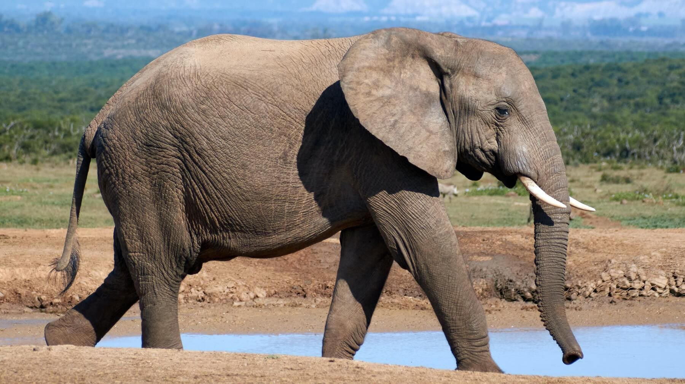
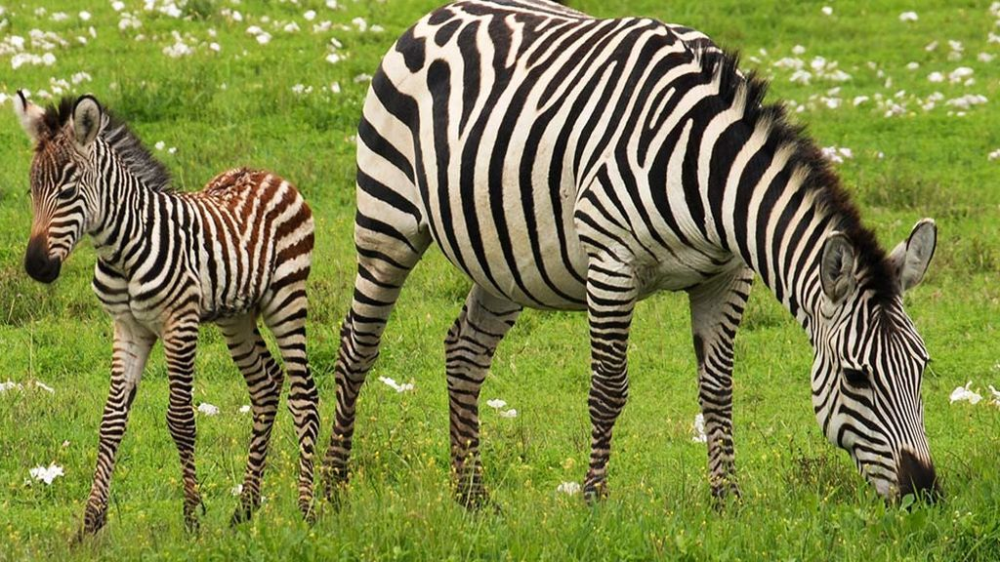
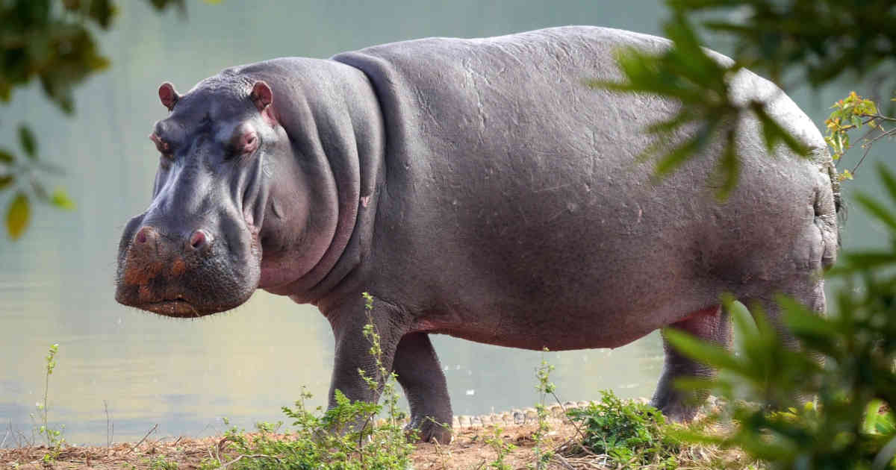

Los elefantes o elefántidos son una familia de mamíferos placentarios del orden Proboscidea. Antiguamente se clasificaban, junto con otros mamíferos de piel gruesa, en el orden, ahora inválido, de los paquidermos. Existen hoy en día tres especies y diversas subespecies.

